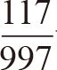
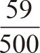
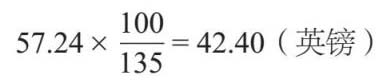
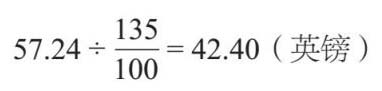
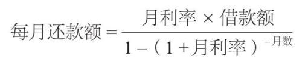
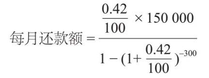
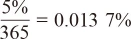
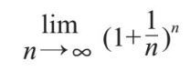
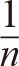

如今，人们离不开百分数。特别优惠、利率、年度利率（APR）、通货膨胀、选举波动、体脂肪、税收和酒精饮料等，都用百分数来表示。虽然这些例子只是百分数应用的部分领域，但也说明了百分数对于现代生活的重要意义。
百分数是分母为100的分数，源于拉丁语“per centum”（以百计数）。它的写法“%”来自意大利商人的速记法（原写作per cento）。百分数流行有两个主要原因，一个原因是大多数货币是十进制的，所以金融计算中会直接使用百分数；另一个原因是，百分数很容易比较。
可以试着想象一下，这个世界如果没有百分数会怎样。你要在两个储蓄账户之间选择，一个以

计息，另一个以
计息，选哪一个呢？若不简化，这两个分数很难比较。但是，我如果让你比较11.74%和11.8%，就比较容易了。由于百分数从本质上讲也是分数，所以它们的算术运算遵循相同的规则。然而，在处理百分数时，我们往往都会使用乘法运算。
当我知道薪水中的一部分会缴税时，发薪日收到工资条的喜悦就会减半。如果我一年挣25 000英镑，还得付23%的税，那么税务部门会得到多少？
税务部门从每100英镑中拿走23英镑，所以我可以把我的薪水除以100，看看当中有多少个100英镑，然后再乘以23：
25 000÷100×23=5 750（英镑）
我先除以100还是先乘以23并不重要，所以我也可以这样写：
25 000×23÷100=5 750（英镑）
同理：
25 000×23%=5 750（英镑）
所以说，若想计算一个数的百分数，我只要乘以这个百分数就可以了。当然，你也可以用小数来表示百分数：
25 000×0.23=5 750（英镑）
真是快乐的一天——我得到了5%的加薪！为了计算新的年薪，我用上面的方法计算出工资的5%，然后加上它就是我的新收入。但是，新工资是我原来工资的105%。所以，新工资是：
25 000×105%=26 250（英镑）
这里只需要一个步骤，而不是两步（先计算工资的5%，再做加法）。如果你习惯用小数，可以用2 500×1.05得到相同的结果。
下面我们再来计算百分数的减少，由于我不想让工资减少，所以我们来举一个销售的例子。你最喜欢去的服装店举办了为期一天的促销活动——“所有标价商品减价15%”，如何计算23英镑的T恤衫的新价格？我们同样可以计算价格的15%，并从原来的价格中减去这个数，但这需要两个步骤。我发现原价在减少15%后只剩下85%，我就可以计算出：
23×0.85=19.55（英镑）
我最近听说，超市里售出的食品利润常常高出35%。那么，我怎么才能计算出57.24英镑的商品除了利润，成本是多少？
要做到这一点，我需要知道，为购物支付的价格是原始价格的135%，所以除以135才能求出1%的价格是多少，然后乘以100就得到了原始的价格。
57.24÷135×100=42.40（英镑）
我也可以这样算：
57.24×100÷135=42.40（英镑）
因此就有：

这个百分数是颠倒的，但是回忆一下，乘以一个分数和除以它的倒数是一样的：

所以如果想从百分数变化中找出原始值，就要除以这个百分数。
我们很多人都需要贷款购买大型、昂贵的物品，比如房产和汽车。银行为了赚钱而收取利息，通常用年度利率来表示。
如果以5%的固定利率贷款的话，你可能会认为在贷款期限内，你的还款额全部都用于所欠款项。但实际不是这样的。因为你支付的还款额被分成两部分：一部分偿还当月累计利息，另一部分偿还本来的金额。
举个例子，假设我以每年12%的利率借了20 000英镑。在第一个月结束时，我需要在20 000英镑的基础上支付1%的利息（年利率12%折合成月利率1%）。这就用到了上面讲到的百分数增加的算法：
20 000×1.01=20 200（英镑）
如果我每月支付500英镑，其中200英镑用于支付利息，剩下的300英镑用于偿还我所欠的债务，那么在第一个月结束时，我还剩余欠款20 200–500=19 700英镑。
在第二个月结束时，按下式计算利息为：
19 700×1.01=19 897（英镑）
500英镑的还款中有197英镑用于支付利息，剩余303英镑用于偿还本金，而我这时的欠款余额是19 397英镑。如果我在第二个月按时还款，欠款会再次减少，这一过程将一直重复，直到还清贷款为止。

当偿还房屋抵押贷款时，这种影响尤其明显。因为前期主要还的是利息，所以贷款本金像蜗牛一样慢吞吞地减少，最初的几份年度报表也会相当令人沮丧。但是随着时间的推移，情况会有所改善。
银行用来计算贷款还款的公式相当吓人，它会让你时刻想着在期末还清所有的债务：

如果我在25年（25×12=300个月）内以5%（月利率为：5%÷12=0.42%）的固定利率抵押贷款15万英镑，那么就有：

如果对于–300有疑问，请复习前文第9章内容。用计算器算起来很方便，我会得出：
我最终共应偿还880.38×300=264 114英镑，比我借的时候多100 000英镑。
很多数学家都想知道多年后利率会如何变化。雅各布·伯努利（1654—1705）注意到，不仅是利率，就连利率的计算频率也会影响还款额和最终支付的总金额。
为了说清楚，不妨想象一下在上例中，如果银行每天收取利息会是什么情况。日利率将是

，每天的还款额是28.80英镑，相当于每月支付876英镑。所以每月只少还了一些，可那也比之前好啊！相反，如果银行每年收取利息，每月的还款将是886.91英镑。可见，利息计算得越频繁，对你越有利。投资也是如此。
伯努利得出结论：如果持续计算利息，你需要计算的公式是：

这个公式看起来很吓人，但却涉及一些重要的数学概念。“lim”是“极限”一词的缩写，而“n →∞”表示“n 趋向无穷大”。请记住：无限不是一个数字，我们无法在计算和公式中使用它。这就是数学家的思维方式：当n 非常大时，（1+

）n 的值会发生什么变化？分数部分随着n 的增大而变得越来越小，n 越大，整个值就会越小，但是乘方次数的增加意味着这个值会增加很多倍。这正是我们在付利息时应该做的考量：多付几次少额的钱会减少所付总额。伯努利在研究银行账户的应计利息时发现，在一年中享受到的最多的利息是初始投资乘以2.7的乘方（乘方的次数是利率值）。如果我以每年5%的速度投资100英镑，并在一年中不断地获得利息，我会得到：
100×2.70.05 =105.09（英镑）
如果这笔利息在年底一次性付清，这105英镑不会有大幅增收，获益有限。但随着时间的推移，人们以更精确的方式计算，2.7的后面就增加了更多的小数位。1978年，美国苹果公司的联合创始人史蒂夫·沃兹尼亚克（生于1950年）用一台早期的苹果电脑计算出了它后面的10万位数。我们知道这个数字像π 一样，永远不会重复：
2.718 281 828 459 045 235 360 287 471 352 662 49…
这个值出现在数学的很多领域，原本看似毫不相干。一位著名的瑞士数学家莱昂哈德·欧拉（1707—1783）在他的力学（描述了事物的运动原理，而不是如何修理机器的学科）著作中，用字母e 来表示这个数字，因此它也被称作欧拉数。这个数字也因欧拉的名声而被广泛使用：
e iπ +1=0
1和0代表自身，是计数和其他数字的基础。π 表示几何的圆形特性。i 是–1的平方根，是一个并不存在的虚数，在各种不可解的方程中，虚数大有用武之地。这个简洁的表达式包含5个最重要的数字，许多人认为这是整个数学中最优雅（也有人说是最美丽）的方程式。